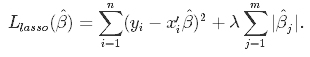

Model dependence
The standard practice of model fitting goes something like this. Fit a line (or hyperplane) through the data. If it doesn’t match closely, transform the data or fit some kind of curve (or curved hypersurface) that follows the data more closely. Then look at the distance of the errors from the curve and possibly change the distribution that models the spread of the errors. This procedure seems reasonable. However, apart from the risk of overfitting, there is a lot of freedom for researchers to choose a model that inflates the desired result.
Similarly, researchers choose whether to include variables or not in their models. In fact, we saw in part 2 that the exclusion of variables had a sizable effect on the estimation of the effect of grit. The result is, in other words, not robust to variable selection.
These phenomena are referred to as ‘model dependence’, which arises from ‘researcher degrees of freedom’ (in choosing variables and choosing a model). The danger of inflating results is not imaginary, given that even the social science results published in the best journals often fail to replicate.
If one wanted to show the amount of model dependence, one would have to run hundreds of thousands of models, including all the combinations of selected variables, interactions, squared terms, etc. We will not do that here (but see this paper for an interesting approach). As we already noted significant model dependence in part 2 of this series, we focus on ways to reduce model dependence.
In the next section we try to reduce researcher influence on variable selection. We then, in the final section, use matching methods in which we prune data points until we are left with closely matched pairs of subjects that are in the treatment and control groups.
Ridge and Lasso regression
Our goal in this section is to minimize the influence of the researcher on variable selection by letting a penalized regression algorithm choose them for us. Just as in ordinary least squares regression, in penalized regression coefficients are optimized with regard to minimizing the squared distance of the predicted values to the outcome. However, a term is added to the optimization formula that penalizes the addition of coefficients. The result is that coefficients have to do more explanatory work to make it into the model. The promise of penalized regression for us is that it can tell us which variables make it to the next phase of the analysis.
There are two important ways in which the penalty term can be evaluated. To understand this, we must be a little bit more precise in our mathematical terminology. In order to minimize something we need a norm that gives us measuring tools for saying how big the thing is that we are minimizing. The L2 norm tells us to square the absolute difference between two vectors (the outcomes y and the predictions based on the vectors of coefficients multiplied by the data matrix). The choice of for L2 norm results in ridge regression. See the formula below.
 The value of lambda is chosen by cross validation. In cross validation the data set is split into a training set and a test set. After building the model based on the training data, it is evaluated on the test data set, which it has not seen before. Specifically, we run the model for lots of values of lambda in a reasonable interval and choose the one that minimizes the error in a test data set (or multiple test data sets after splitting the data many times).
The value of lambda is chosen by cross validation. In cross validation the data set is split into a training set and a test set. After building the model based on the training data, it is evaluated on the test data set, which it has not seen before. Specifically, we run the model for lots of values of lambda in a reasonable interval and choose the one that minimizes the error in a test data set (or multiple test data sets after splitting the data many times).
By contrast, if we do not square the coefficient term and just take its absolute value, we are using an L1 norm. It results in lasso regression. For more on norms, see this lecture.  Lasso more aggressively eliminates coefficients than ridge regression. This has to do with the norms. In the L2 norm (in ridge), small coefficients are penalized less severely than in L1. After all, in L2 coefficients are squared in the penalty term. If they have absolute value < 1 (and are nonzero), then squaring them makes the penalty for adding them smaller. So they stay in the model for longer.
Both Lasso and Ridge regression are equivalent to a Bayesian regression with a harsh prior. This point of view is much more elegant, but I will stick with the regular interpretation here. Read more on the Bayesian point of view on Lasso and Ridge regression here.
So let us apply these methods to our data set. Although we want to minimize the influence of the researcher, we hand pick only those variables that were measured before the outcome (mathscore2) was measured. Otherwise the results of the model are not sensible. We also scale variables that were not scaled already, so that they are weighted equally by the penalty term lambda.
grit <- bind_rows(sample1,sample2) %>%
filter(inconsistent=='0') %>%
select(raven,wealth,risk,success,age,male, task_ability, grit_survey1,belief_survey1,
verbalscore1,mathscore1,mathscore2,csize,grit,classid,schoolid,sample) %>%
mutate_at(c("success", "wealth", "risk", "csize", "age", "task_ability"), ~(scale(.) %>% as.vector)) %>%
as.data.frame() We impute values using the mice package and choose the standard imputation method, which is (Bayesian) predictive mean matching or ‘pmm’. For details on the six steps in this method see this post. We do a sanity check by plotting imputed values in magenta.
# imputation with mice
grit_both_imp <- mice(grit, m = 1, method="pmm")##
## iter imp variable
## 1 1 raven wealth risk success age male task_ability grit_survey1 belief_survey1 verbalscore1 mathscore1 mathscore2
## 2 1 raven wealth risk success age male task_ability grit_survey1 belief_survey1 verbalscore1 mathscore1 mathscore2
## 3 1 raven wealth risk success age male task_ability grit_survey1 belief_survey1 verbalscore1 mathscore1 mathscore2
## 4 1 raven wealth risk success age male task_ability grit_survey1 belief_survey1 verbalscore1 mathscore1 mathscore2
## 5 1 raven wealth risk success age male task_ability grit_survey1 belief_survey1 verbalscore1 mathscore1 mathscore2# use first imputed data set only (here we only created one)
grit_imp_1 <- complete(grit_both_imp, 1)
# imputed is magenta
densityplot(grit_both_imp)
The imputation seems reasonable.
To avoid fitting the model to the sample and not the data generating process, we cross validate. We let the cv.glmnet function from the glmnet package do this 10 times for us and plot the result.
# store the outcome and predictive variables separately
y <- as.data.frame(grit_imp_1) %>% select(mathscore2) %>% as.matrix()
X <- as.data.frame(grit_imp_1) %>% select(-mathscore2) %>% as.matrix()
# create a vector of lambda's to test
lambdas_to_try <- 10^seq(-4, 3, length.out = 100)
# Setting alpha to 0 results in ridge regression; we set standardize to FALSE because we already have done so
ridge_cv <- cv.glmnet(X, y, alpha = 0, lambda = lambdas_to_try,
standardize = FALSE, nfolds = 10)
# Plot cross-validation results
plot(ridge_cv) The dotted vertical line on the left shows the value of (the log of) lambda for which the mean squared error in the test data set is minimal. The dotted line to the right adds one standard error to this value and is often used because it is more conservative. There is no deep theory behind choosing this value. It is rather an extra barrier against overfitting that works well in practice.
The dotted vertical line on the left shows the value of (the log of) lambda for which the mean squared error in the test data set is minimal. The dotted line to the right adds one standard error to this value and is often used because it is more conservative. There is no deep theory behind choosing this value. It is rather an extra barrier against overfitting that works well in practice.
The number 16 on top of the graph refers to the number of coefficients that are left in the model.
# setting alpha to 1 results in lasso regression
lasso_cv <- cv.glmnet(X, y, alpha = 1,
standardize = FALSE, nfolds = 10)
res <- glmnet(X, y, alpha = 0, lambda = lambdas_to_try, standardize = FALSE)
plot(res, xvar = "lambda")
legend("bottomright", lwd = 1, col = 1:6, legend = colnames(X), cex = .7)
abline(v=log(ridge_cv$lambda.min), col='grey', lwd=2, lty="dashed")
abline(v=log(ridge_cv$lambda.1se), col='black', lwd=2, lty="dashed") In the plot above we see how coefficients shrink by increasing the value of lambda in ridge regression. The dashed grey line shows the log of lambda for which the mean squared error in the test set in minimal and the black dashed line denotes the log of the minimizing lambda plus a standard error. We see that indeed none of the coefficients shrinks to zero for either lambda.
In the plot above we see how coefficients shrink by increasing the value of lambda in ridge regression. The dashed grey line shows the log of lambda for which the mean squared error in the test set in minimal and the black dashed line denotes the log of the minimizing lambda plus a standard error. We see that indeed none of the coefficients shrinks to zero for either lambda.
Let’s repeat the analysis for the L1 norm, which leads to lasso regression.
# Set alpha to 1 to get lasso
lasso_cv <- cv.glmnet(X, y, alpha = 1,
standardize = FALSE, nfolds = 10)
# Plot cross-validation results
plot(lasso_cv) We see that the minimum value for lambda eliminates only one variable, but lambda plus one standard error eliminates about 8. Let’s get a more precise picture of this by plotting the size of the coefficients.
We see that the minimum value for lambda eliminates only one variable, but lambda plus one standard error eliminates about 8. Let’s get a more precise picture of this by plotting the size of the coefficients.
res <- glmnet(X, y, alpha = 1, lambda = lambdas_to_try, standardize = TRUE)
plot(res, xvar = "lambda")
legend("bottomright", lwd = 1, col = 1:6, legend = colnames(X), cex = .7)
abline(v=log(lasso_cv$lambda.min), col='grey', lwd=2, lty="dashed")
abline(v=log(lasso_cv$lambda.1se), col='black', lwd=2, lty="dashed") Choosing lambda plus one SE gets rid of the bunch of coefficients that may not be predictive out of sample. Let’s pull out the values for the coefficients at lambda plus one SE.
Choosing lambda plus one SE gets rid of the bunch of coefficients that may not be predictive out of sample. Let’s pull out the values for the coefficients at lambda plus one SE.
coef(lasso_cv, s = lasso_cv$lambda.1se)## 17 x 1 sparse Matrix of class "dgCMatrix"
## 1
## (Intercept) 1.850032e-02
## raven 1.420646e-01
## wealth .
## risk .
## success 1.693490e-01
## age -3.312078e-04
## male .
## task_ability 1.385986e-01
## grit_survey1 3.857172e-02
## belief_survey1 .
## verbalscore1 7.797953e-02
## mathscore1 1.289663e-01
## csize .
## grit 2.093561e-02
## classid 9.381892e-05
## schoolid .
## sample .If we go with this value of lambda, we are left with the variables verbalscore1, mathscore1, csize, grit, classid, grit_survey1 and raven. Let’s check out the ramifications of these variable selections as we now turn to matching.
 We see that the Mahalanobis distance between matched pairs decreases smoothly as we prune more observations. There are quick gains in distance reduction for the first 500 observations that we throw away, but the improvement afterward is nothing to sniff at either.
We see that the Mahalanobis distance between matched pairs decreases smoothly as we prune more observations. There are quick gains in distance reduction for the first 500 observations that we throw away, but the improvement afterward is nothing to sniff at either.
 We see again that as biased is reduced, we are led to believe that the effect is quite a bit higher than we thought. Towards the end, the estimate becomes highly model dependent though, as can be seen from the wide band at the end.
We see again that as biased is reduced, we are led to believe that the effect is quite a bit higher than we thought. Towards the end, the estimate becomes highly model dependent though, as can be seen from the wide band at the end. When we balance based on all pre-treatment variables, we note that the same tendency for higher effect size estimates occurs. There is a steep downward turn at the end though, which is surrounded by a huge amount of uncertainty that arises from model dependence.
When we balance based on all pre-treatment variables, we note that the same tendency for higher effect size estimates occurs. There is a steep downward turn at the end though, which is surrounded by a huge amount of uncertainty that arises from model dependence.